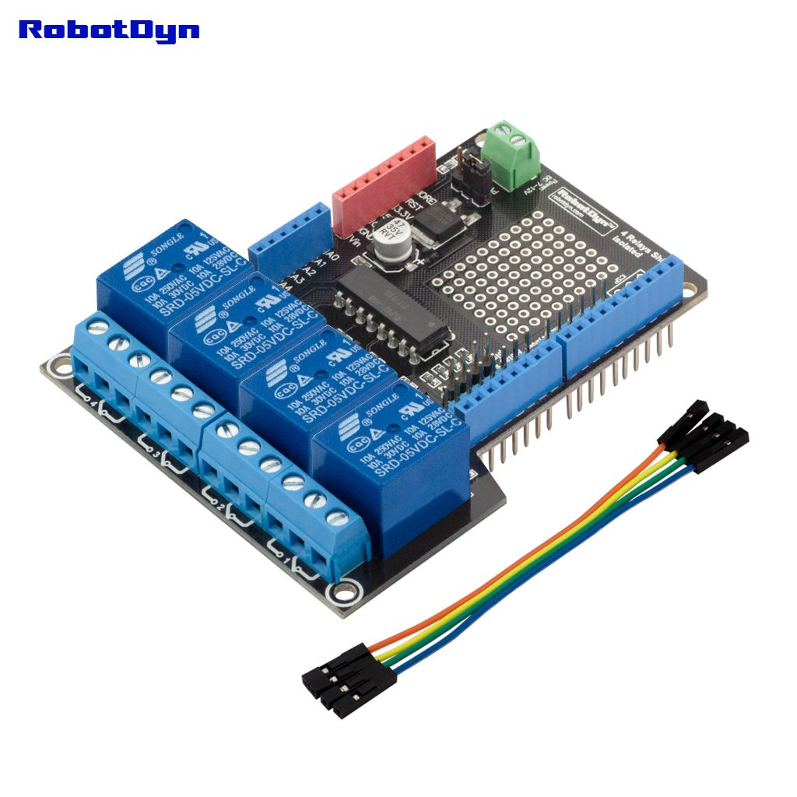

Relay Shield Example

The RobotDyn Relay Shield provides four high quality relays with NO/NC interfaces. LED indicators show the on/off state of each relay.
In this tutorial we will show how to use a relay to control an LED, however, its real purpose is to control high current devices.
Schematics

Code
int RelayControl1 = 7;
void setup()
{
pinMode(RelayControl1, OUTPUT);
}
void loop()
{
digitalWrite(RelayControl1,HIGH);// NO1 and COM1 Connected (LED on)
delay(1000); // wait 1000 milliseconds (1 second)
digitalWrite(RelayControl1,LOW);// NO1 and COM1 Disconnected (LED off)
delay(1000); // wait 1000 milliseconds (1 second)
}